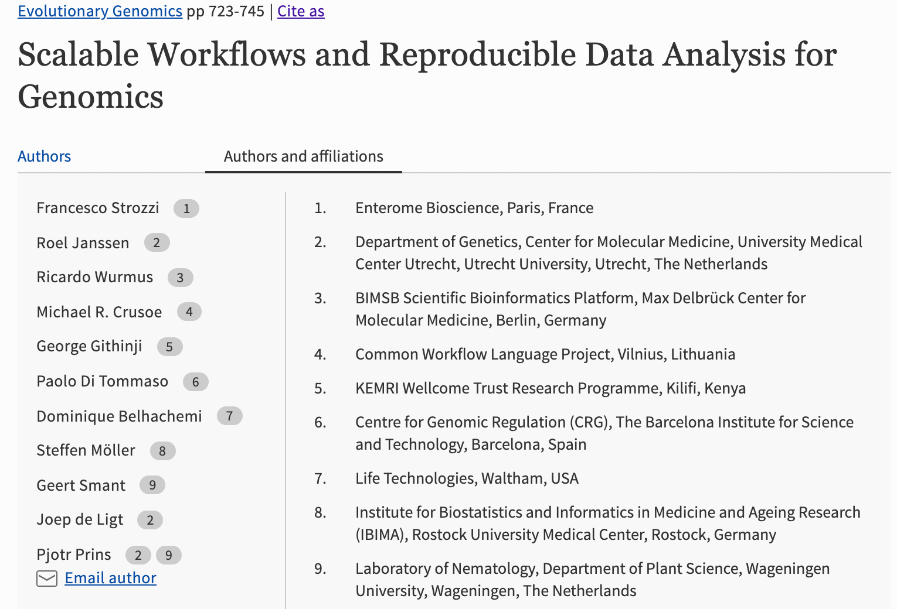
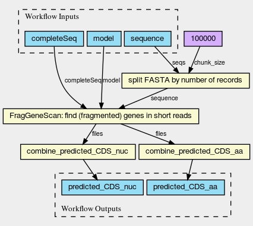

class: center, top, title-slide <h1> Scalable Workflows and Reproducible Data Analysis <br> *for Genomics* </h1> A CC-BY-4.0 [protocol](https://link.springer.com/protocol/10.1007/978-1-4939-9074-0_24) <p align="left"> <b><a href="http://jdeligt.github.io/">Joep de Ligt</a></b> PhD <br> Lead Bioinformatics | Pathogen & Human Genomics <br> Institute of Environmental Science and Research (ESR) <br> <br> <b>eResearch, Dunedin, 2020</b><br> </p> <br> <img src="../images/ESR_SFC_logo.png" height="110" width="300" alt="ESR logo"> --- # The [authors](https://link.springer.com/protocol/10.1007/978-1-4939-9074-0_24#authorsandaffiliations)  **Conflicts of interests;** - M. R. Crusoe is the creator of CWL & I'm a bit of CWL / Guix fanboy --- # A Reproducible Workflow #### Cue cooking analogy | | | |-|-| | <b>Compute</b> | <b>Cooking</b> | | .highlight[<b>Data</b>] | Ingredients| | | | | .highlight[<b>Tools</b>] | Appliances | | | | | .highlight[<b>Settings</b>] | Pounds or grams | <br> <b>Preferably standardised;</b> - format - language - size - .. --- # Example from EBI  <br> - Workflow: https://github.com/EBI-Metagenomics/ebi-metagenomics-cwl/ - Image: https://view.commonwl.org/ - [Full URL](https://view.commonwl.org/workflows/github.com/proteinswebteam/ebi-metagenomics-cwl/blob/master/workflows/orf_prediction.cwl) --- # Scaleable and Portable #### Yet another cooking analogy | | | |-|-| | <b>Compute</b> | <b>Cooking</b> | | .highlight[<b>Global identifiers</b>] | Global Groceries inc. | | | | | .highlight[<b>Depency stack</b>] | Kitchen / house / .. | | | | | .highlight[<b>'Batching'</b>] | Kids 'helping' | <br> --- # Example from Pjotr <img src="../images/cwltool-dependencies.svg?sanitize=true" alt="Graph of a dependecies for cwltool" height=200> <br> https://hpc.guix.info/blog/2019/01/creating-a-reproducible-workflow-with-cwl/ | | | |-|-| | .highlight[<b>GNU Guix for dependecies</b>] | - From the kernel up <br> - Bit reproducible | | | | | .highlight[<b>IPFs for data</b>] | - Global namespace <br> - Content addressable | | | | | .highlight[<b>Batching not included</b>] | - Toil is a good example | --- class: top # Acknowledgements | | | | |-|-|-| | Francesco Strozzi | Roel Janssen | Ricardo Wurmus | | Michael R. Crusoe | George Githinji | Paolo Di Tommaso | | Dominique Belhachemi | Steffen Möller | Geert Smant | | | | | .highlight[.large[Pjotr Prins]] <br> ## E.highlight[/]S.highlight[/]R | | | |-|-| | Miles Benton | Hermes Perez | | Russell Smithies | Shane Sturrock | | Human Genomics team | Pathogen Genomics team |